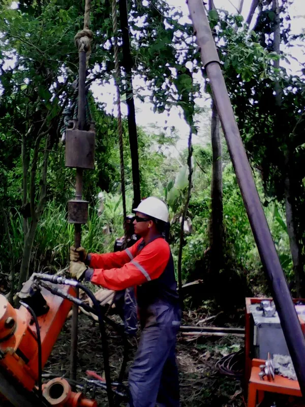
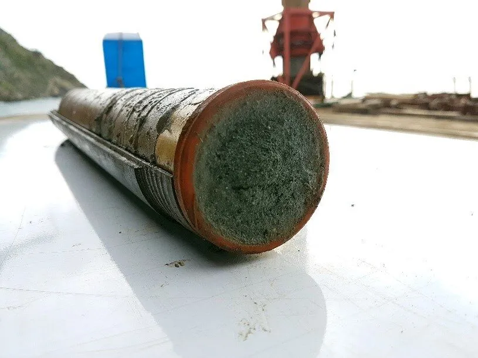
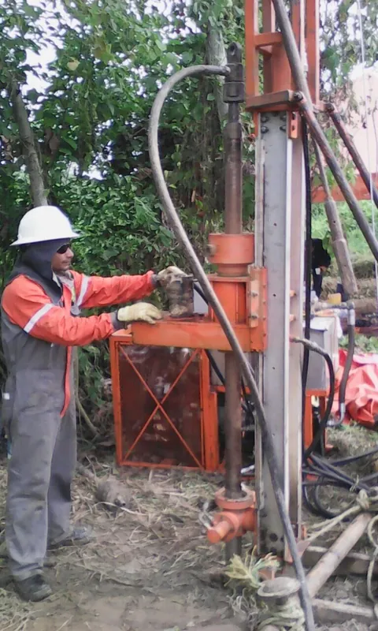
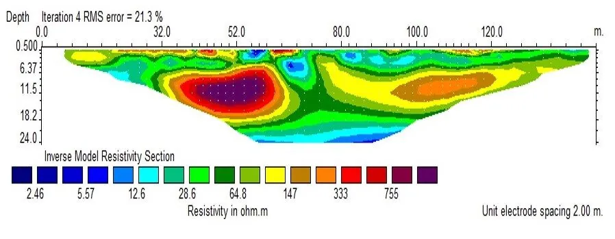
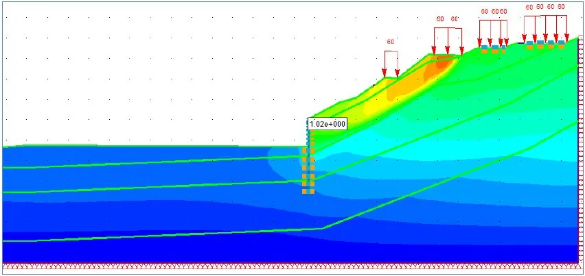
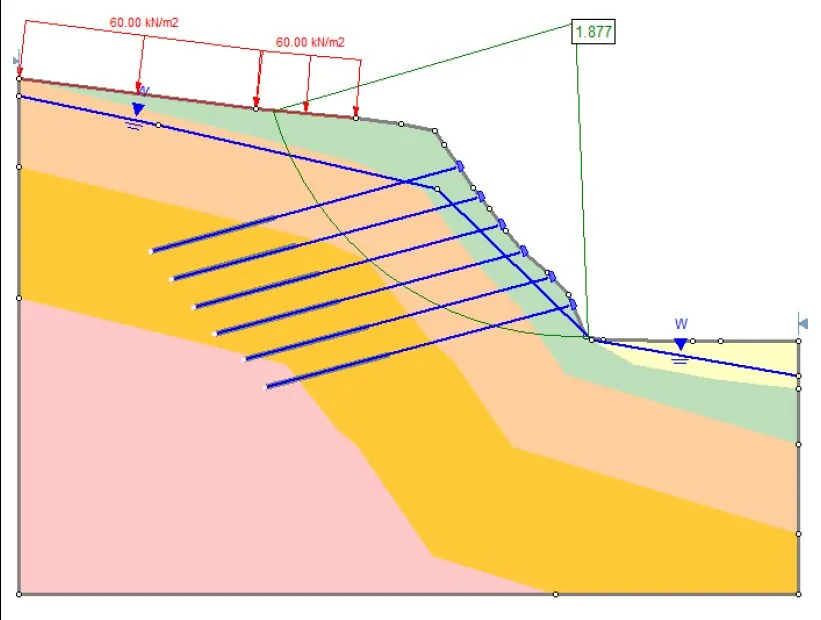
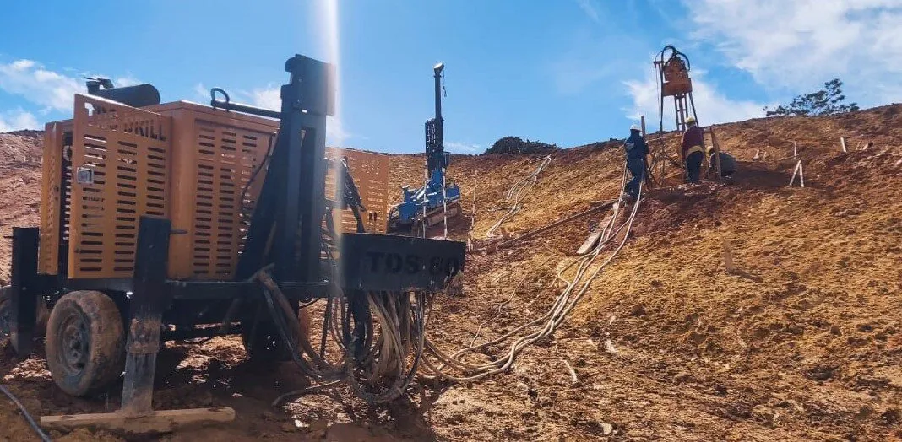
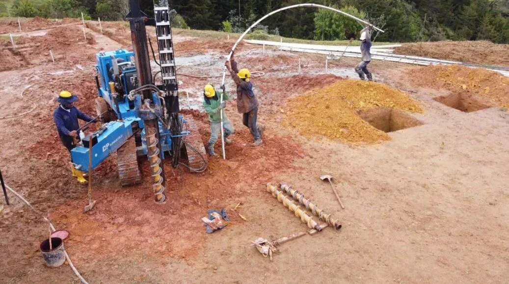
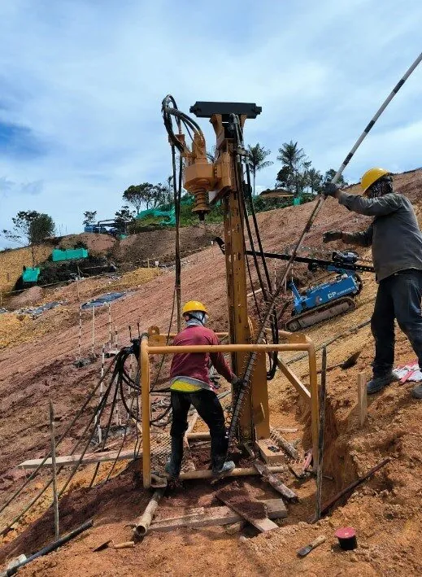

Consultoría geotécnica, estructural e integral
Toda obrasólida empiezabajo tierra.
Exploramos el subsuelo hasta 150 m, diseñamos cimentaciones y estructuras, y construimos pilotes y micropilotes. Un solo equipo, del sondeo a la obra.
Así leemos un terreno antes de construir. Toque cada estrato para ver qué significa para su obra.
Por qué Grupo G&E
Del estudio a la obra, un solo equipo
Exploración, diseño, interventoría y construcción bajo una misma coordinación. La información de campo llega directo al diseño y a la ejecución.
Equipos propios en campo
Perforación con recuperación de muestras hasta 150 m, roto-percusión, sismógrafo ABEM, tomografía eléctrica, georradar (GPR) y equipos de micropilotes.
Clientes que exigen
PriceSmart, EPM, IDOM, Antioquia Gold, Bioexplora e IngenioBIM, entre otros, nos han confiado estudios, diseños, interventorías y obras.
Geotecnia, estructuras y construcción en una sola firma.
Seis líneas de trabajo con ingeniería conceptual, básica y de detalle para los sectores industrial, público y privado.
Equipos propios, datos confiables.
Operamos nuestros propios equipos de perforación, geofísica y cimentación profunda. Eso nos permite responder con oportunidad y controlar la calidad de la información que alimenta cada diseño.
- 150 mPerforación directa con recuperación de muestras en suelo y roca
- ABEMSismógrafo para refracción, reflexión, down-hole y cross-hole
- ERTEnsayos geoeléctricos y tomografía eléctrica
- GPRRadar de penetración terrestre (georradar)
- IGU · IR · IRSEquipos para pilotes y micropilotes de cimentación






Construimos lo que diseñamos.
Micropilotes de cimentación con sistemas IGU, IR e IRS, contenciones y estabilización de taludes, con talento humano, equipos y tecnología especializada.



- Industria
- Comercio
- Educación
- Salud
- Vías y taludes
- Puertos
- Minería
- Acueducto y saneamiento
Obras que ya están en pie.
Filtre por sector y abra cada proyecto para ver su alcance, el cliente y las líneas de servicio que intervinieron.
Clientes y aliados.
Constructoras, consultoras, entidades públicas y operadores industriales y mineros en Antioquia y otras regiones del país. Uso de logos por confirmar.
Del sondeo a la obra.
Cada etapa entrega un resultado verificable antes de pasar a la siguiente. Usted sabe siempre en qué punto está su proyecto.
- Etapa 01
Exploración
Perforación, ensayos de campo y geofísica para caracterizar el subsuelo.
- Etapa 02
Análisis
Laboratorio, modelación numérica y parámetros geotécnicos de diseño.
- Etapa 03
Diseño
Cimentaciones, contenciones y estructuras con ingeniería de detalle.
- Etapa 04
Ejecución
Construcción de cimentaciones o interventoría técnica, administrativa y financiera.
Quiénes somos.
Grupo G&E nació para prestar servicios técnicos y profesionales en exploración geológica y geotécnica, consultoría, diseño, construcción e interventoría de obras de infraestructura, en Ingeniería Civil, Geotecnia y Estructuras. Trabajamos a nivel nacional e internacional con ingenieros especializados en Geotecnia, Estructuras, Hidráulica, Hidrología e Interventoría.
Misión
Prestamos servicios de ingeniería conceptual, básica y de detalle para el sector industrial, público y privado, a nivel local y nacional, de forma eficiente, ágil y oportuna, con un grupo interdisciplinario, equipos especializados y tecnología de punta.
Visión
Ser una de las principales empresas de consultoría, diseño, interventoría y construcción de los sectores industrial, público y privado, reconocida por su calidad y respuesta oportuna, con mejora continua mediante herramientas tecnológicas y personal especializado.
Lo que nos preguntan antes de empezar.
Si su duda no está aquí, escríbanos y le respondemos.
Llevemos su proyecto a buen término.
Cuéntenos lo básico en tres pasos. Le respondemos en menos de 24 horas con una propuesta técnica y económica.
- Teléfono+57 312 652 3638
+57 324 248 9898 - WhatsApp+57 312 652 3638
- Instagram@grupo_gye
- Correoinfo@grupogye.com
magamez@grupogye.com - OficinaCra 81A #47-73, Floresta
Medellín, Antioquia - HorarioLun–Vie · por confirmar